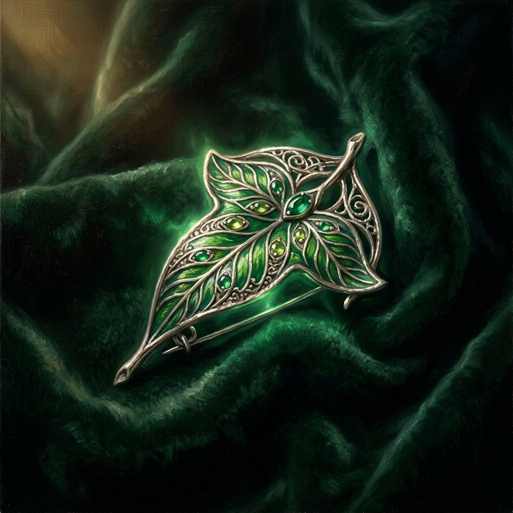
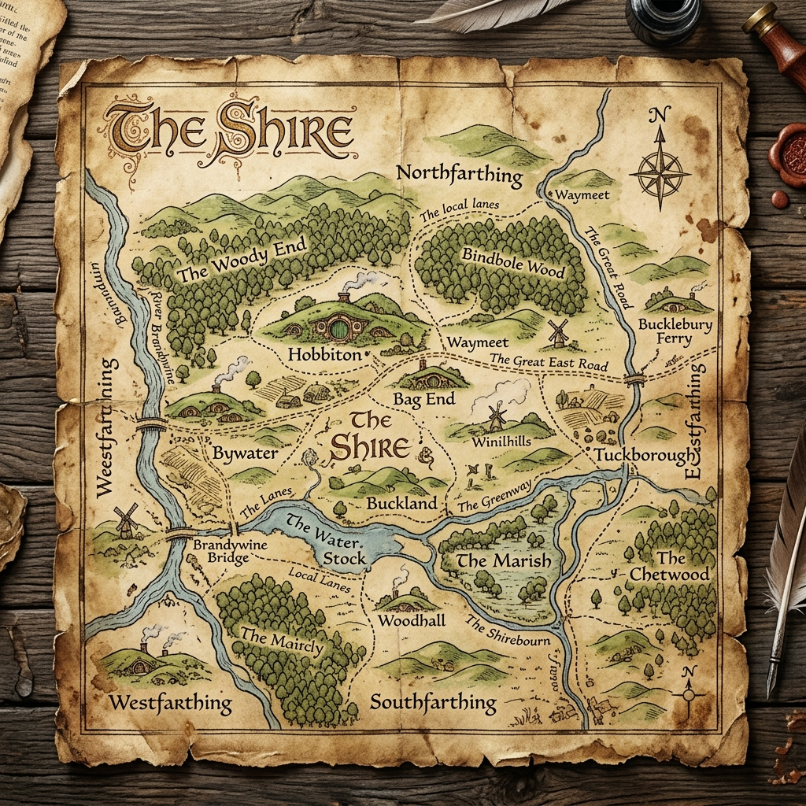

Nie odpytka. Nie ściąga. Wyprawa. Przemierz Śródziemie od Bag End po Górę Przeznaczenia i odkryj, jak chroni się to, co stworzył ludzki umysł — krok po kroku, scena po scenie.
Każda kraina kryje jedną prawdę o prawie autorskim. Podążaj szlakiem — runy zapalają się, gdy zdobędziesz wiedzę.
